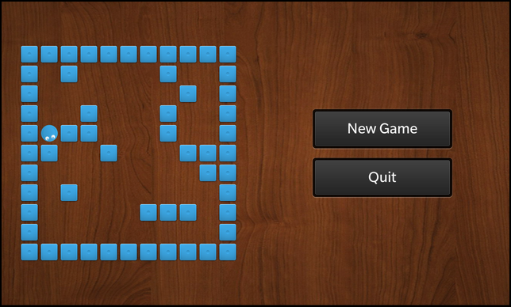

Files:
The Accel Game example demonstrates how to use sensors from the QtSensors module to move a player through a maze.

In this example we'll learn how to use the QAccelerometerSensor, QAccelerometerFilter and QAccelerometerReading classes to retrieve the current x/y/z values from the accelerometer sensor of the device. The values are used to trigger an direction change or move of the player inside the maze.
The UI of this sample application consists of a custom component (Maze.qml) that represents the maze board and two Buttons to start a new game or quit the application.
The business logic of the application is encapsulated in the GameController class which is made available to the UI under the name '_gameController'.
// The maze board Maze { horizontalAlignment: HorizontalAlignment.Center verticalAlignment: VerticalAlignment.Center }
The custom Maze component is placed at the left hand side of the screen and simply contains a background image and a Container with the object name 'board', which will be accessed from the business logic to place the stones and player items on it.
// The board where the player object can be moved Container { objectName: "board" layoutProperties: AbsoluteLayoutProperties { positionX: 50 positionY: 50 } layout: AbsoluteLayout {} preferredWidth: 450 preferredHeight: 450 }
The two buttons simply invoke the newGame() method of the GameController object or the quit() method of the Application object when the user clicks on them.
Button { horizontalAlignment: HorizontalAlignment.Center text: qsTr ("New Game") onClicked: _gameController.newGame() } Button { horizontalAlignment: HorizontalAlignment.Center text: qsTr ("Quit") onClicked: _app.quit() }
The Player class encapsulates the business logic of a player on the maze board. It provides methods to change direction and position of the player.
class Player : public QObject, public QScriptable { Q_OBJECT public: /** * Constructor takes the Board object, where the player should play on */ Player(Board *board, QObject *parent = 0); ~Player(); public Q_SLOTS: // Reset the player to its initial state void reset(); // These methods turn and move the player in a given direction void goUp(); void goRight(); void goDown(); void goLeft(); Q_SIGNALS: // Emitted whenever the user has finished its move animation void moved(); private: // Describes the possible directions the player can move to enum Direction { Up, Right, Down, Left }; // Move the player in a given direction void go(Direction direction); // The Board object the player is playing on Board *m_board; // The tile that represents the player in the UI bb::cascades::ImageView *m_playerTile; // The direction the player is currently moving Direction m_currentDirection; // The current position of the player on the board QPoint m_currentPosition; // The move animation that is current running bb::cascades::AbstractAnimation *m_currentAnimation; };
The Player class also stores a reference to the UI object (ImageView) that represents the player on the screen.
Inside the constructor we create the ImageView, load the player image and add it to the Container that acts as board.
Player::Player(Board *board, QObject *parent) : QObject(parent) , m_board(board) , m_playerTile(new ImageView) , m_currentDirection(Up) , m_currentPosition(0, 0) , m_currentAnimation(0) { // Initialise the player tile and add it to the board container m_playerTile->setPreferredWidth(s_tileSize); m_playerTile->setPreferredHeight(s_tileSize); m_playerTile->setImage(Image(QUrl("asset:///images/player.png"))); m_board->board()->add(m_playerTile); // Ensure that the x/y position is really 0,0 otherwise using the // translationX/translationY properties does not work as expected. AbsoluteLayoutProperties *props = qobject_cast<AbsoluteLayoutProperties*>(m_playerTile->layoutProperties()); if (props) { props->setPositionX(0); props->setPositionY(0); } }
If the goUp() method is invoked, we simply forward this to a parameterized call of the go() method, in which all the movement handling of the player is calculated.
void Player::goUp() { go(Up); }
In the go() method we update the current direction and then calculate the new position depending on our current position and the current direction. If the canMoveTo() method of the Board object returns true (that means there is no wall) for the new position, we update our position. Afterwards we update the UI by starting an animation that will move the player item (ImageView) to the new position and applies a rotation if necessary.
void Player::go(Direction direction) { // Update the current direction m_currentDirection = direction; // A falg to store whether the player can actually move bool move = false; // Depending on the new direction rotate the plater and move it one step switch (direction) { case Up: if (m_board->canMoveTo(m_currentPosition.x(), m_currentPosition.y() - 1)) { move = true; m_currentPosition.setY(m_currentPosition.y() - 1); } break; case Right: if (m_board->canMoveTo(m_currentPosition.x() + 1, m_currentPosition.y())) { move = true; m_currentPosition.setX(m_currentPosition.x() + 1); } break; case Down: if (m_board->canMoveTo(m_currentPosition.x(), m_currentPosition.y() + 1)) { move = true; m_currentPosition.setY(m_currentPosition.y() + 1); } break; case Left: if (m_board->canMoveTo(m_currentPosition.x() - 1, m_currentPosition.y())) { move = true; m_currentPosition.setX(m_currentPosition.x() - 1); } break; default: break; } // Update the position of the player tile on screen // Stop any previously running animation if (m_currentAnimation) { m_currentAnimation->stop(); m_currentAnimation->deleteLater(); } // Calculate the rotation of the player image depending on the direction const int rotationOffset = (move ? ((m_currentDirection == Up || m_currentDirection == Left) ? -115 : 115) : 0); // The animation should take 80 milliseconds const int duration = 80; // Create a new move animation // It's a parallel animation that consists of two translate transition for x & y // directions and the rotate transition. m_currentAnimation = ParallelAnimation::create(m_playerTile) .add(TranslateTransition::create() .toX(m_currentPosition.x() * s_tileSize) .duration(duration).easingCurve(StockCurve::Linear)) .add(TranslateTransition::create() .toY(m_currentPosition.y() * s_tileSize) .duration(duration).easingCurve(StockCurve::Linear)) .add(RotateTransition::create() .toAngleZ(m_playerTile->rotationZ() + rotationOffset) .duration(duration).easingCurve(StockCurve::Linear)); // Emit the moved() signal when the animation has finished, // so that the GameController can evaluate the next input connect(m_currentAnimation, SIGNAL(ended()), SIGNAL(moved())); // Start the animation m_currentAnimation->play(); }
The Board class contains all the business logic for handling the maze board. It generates a distribution of blocks on the maze and the tiles (ImageViews) that are displayed in the UI.
class Board : public QObject { Q_OBJECT public: // We take the Container that represents the maze board as a parameter Board(bb::cascades::Container *boardContainer, QObject *parent = 0); /** * Returns whether a player can move to the given position. * The position is given in logical coordinates (0-9). */ bool canMoveTo(int x, int y) const; /** * The Container that represents the maze board. */ bb::cascades::Container *board() const; public Q_SLOTS: /** * Reset the maze board and regenerate all blocks. */ void reset(); private: // The Container object that represents the maze board in the UI bb::cascades::Container *m_board; // The list of block tiles that we created QVector<bb::cascades::Control *> m_blocks; // The map where we store the locations of the blocks inside the maze QVector<QVector<bool> > m_blockMap; };
Inside the constructor we fill the board representation (a QVector<QVector<bool>>) with false to mark the complete board as empty. Later on we'll change the values to true at the positions where a wall is located.
Board::Board(bb::cascades::Container *boardContainer, QObject *parent) : QObject(parent) , m_board(boardContainer) { // Initialize the random number generator so that we can use it for dynamic // block distribution qsrand(QDateTime::currentDateTime().toMSecsSinceEpoch()); // Initialise the block map with 'false' for all cells -> no blocks available for (int x = 0; x < s_boardDimension; x++) { m_blockMap << QVector<bool>(); for (int y = 0; y < s_boardDimension; y++) m_blockMap[x] << false; } }
The canMoveTo() method returns whether there is no wall at the requested position and therefor we can move the player there.
bool Board::canMoveTo(int x, int y) const { // We can't move beyond the borders of the board if (x < 0 || x >= s_boardDimension || y < 0 || y >= s_boardDimension) return false; // We can't move to coordinate where a block is located return m_blockMap[x][y] == false; }
The reset() method rebuilds the layout of the maze by placing a couple of walls at random positions.
void Board::reset() { // Remove all block controls from the board... Q_FOREACH (Control *block, m_blocks) { m_board->remove(block); } // ... and delete them qDeleteAll(m_blocks); m_blocks.clear(); // Clear out internal block map for (int x = 0; x < s_boardDimension; x++) for (int y = 0; y < s_boardDimension; y++) m_blockMap[x][y] = false; QVector<QPoint> blockCoordinates; // For dynamic block distribution we use random coordinates for (int i = 0; i < 20; i++) { const QPoint newPoint(qrand() % s_boardDimension, qrand() % s_boardDimension); // Contains a block already if (blockCoordinates.contains(newPoint)) continue; // That's the starting place for the player if (newPoint == QPoint(0, 0)) continue; blockCoordinates << newPoint; } // Generate the new blocks Q_FOREACH (const QPoint position, blockCoordinates) { // Mark as occupied in blockMap m_blockMap[position.x()][position.y()] = true; // Create block tile ImageView *block = new ImageView(); block->setPreferredWidth(50); block->setPreferredHeight(50); block->setImage(Image(QUrl("asset:///images/block.png"))); block->setTranslationX(position.x() * s_tileSize); block->setTranslationY(position.y() * s_tileSize); // Add the block tile to the board container... m_board->add(block); // ... and store the object in our internal list, so that we can // clean it up later m_blocks << block; } }
The GameController is the central class of this application. It contains the objects that encapsulate the business logic (Board and Player) and the AccelerationSensor, which triggers the movement of the player.
class GameController : public QObject { Q_OBJECT public: GameController(QObject *parent = 0); /** * Set which Container object should be the board for the game. */ void setBoard(bb::cascades::Container *board); public Q_SLOTS: // Called when 'New Game' action selected in UI void newGame(); private Q_SLOTS: /** * Evalue the sensor data and move the player depending on sensor values. */ void evaluateInput(); private: // The Container Object the game is run on bb::cascades::Container *m_boardContainer; // The Board object that contains the business logic for the maze board Board *m_board; // The Player objecy that contains the business logic for the main player Player *m_player; AccelerationSensor m_sensor; };
Inside the constructor we start the acceleration sensor, so that we can access the current data from the hardware later on.
GameController::GameController(QObject *parent) : QObject(parent) , m_boardContainer(0) , m_board(0) , m_player(0) { // Start the sensor to gather data m_sensor.start(); }
The setBoard() method is called after the UI has been initialized. We store the pointer to the Container that represents the maze here and create the Board and Player business logic objects. Since we want the animation of a player move to finish before we start the next animation, the evaluation of the acceleration sensor is not time driven but depends on the moved() signal of the Player object, which is emitted after a move animation has been finished. However for the initial case we have to call evaluateInput() explicitly.
void GameController::setBoard(bb::cascades::Container *board) { /* * Now that we know on which Container we are supposed to work, * create our Board and Player objects that handle logic. */ m_boardContainer = board; m_board = new Board(m_boardContainer, this); m_board->reset(); m_player = new Player(m_board, this); m_player->reset(); // Whenever the player has finished its move animation we check for new input connect(m_player, SIGNAL(moved()), SLOT(evaluateInput()), Qt::QueuedConnection); // and to kick things off... evaluateInput(); }
Inside evaluateInput() we simply call the different move methods on the Player object depending on the current values reported by the AccelerationSensor.
void GameController::evaluateInput() { if (!m_player) return; // Move the player depending on the current x/y/z values of the sensor if (m_sensor.x() > 0.8) m_player->goUp(); else if (m_sensor.x() < -0.8) m_player->goDown(); else if (m_sensor.y() > 0.8) m_player->goLeft(); else if (m_sensor.y() < -0.8) m_player->goRight(); else // Try again in 80 milliseconds QTimer::singleShot(80, this, SLOT(evaluateInput())); }
If the user clicks the 'New Game' button, the newGame() method is invoked, where we reset the board to regenerate a random maze and set the player back at its start position.
void GameController::newGame() { // For a new game we let the Board generate a new random maze... m_board->reset(); // ... and move the player back to its initial position m_player->reset(); m_sensor.start(); evaluateInput(); }
The AccelerationSensor class encapsulates the data gathering of the application. It contains a QAccelerometerSensor object, which does the low-level communication with the accelerometer sensor of the device, and provides the three properties 'x', 'y' and 'z' to make the current acceleration value available to the UI. It inherits from QAccelerometerFilter and reimplements the 'bool filter(QAccelerometerReading*)' method to retrieve the sensor data from the QAccelerometerSensor object.
class AccelerationSensor : public QObject, public QAccelerometerFilter { Q_OBJECT // The properties to access the x/yz/ values of the acceleration sensor Q_PROPERTY(qreal x READ x NOTIFY xChanged) Q_PROPERTY(qreal y READ y NOTIFY yChanged) Q_PROPERTY(qreal z READ z NOTIFY zChanged) public: AccelerationSensor(QObject *parent = 0); // The accessor methods for the value properties qreal x() const; qreal y() const; qreal z() const; public Q_SLOTS: // Start gathering sensor values void start(); // Stop gathering sensor values void stop(); Q_SIGNALS: // The change notification signals of the value properties void xChanged(); void yChanged(); void zChanged(); protected: /** * Called by the QAccelerometer whenever new values are available. */ bool filter(QAccelerometerReading *reading); private: // The acceleration sensor QAccelerometer m_accelerationSensor; // The value properties qreal m_x; qreal m_y; qreal m_z; };
Inside the constructor we try to connect the QAccelerometerSensor object to the hardware backend. If that's successful, we register the AccelerationSensor class as filter for the QAccelerometerSensor object and start the sensor to gather data.
AccelerationSensor::AccelerationSensor(QObject *parent) : QObject(parent) , m_x(0) , m_y(0) , m_z(0) { // At first we have to connect to the sensor backend... if (!m_accelerationSensor.connectToBackend()) qWarning() << "Cannot connect to acceleration sensor backend!"; // ... and then add a filter that will process the read data m_accelerationSensor.addFilter(this); }
The 'bool filter(QAccelerometerReading*)' method is called whenever the QAccelerometerSensor object retrieved new data from the hardware sensor. Inside this method we update the properties with the data from the sensor and inform the UI about possible value changes.
bool AccelerationSensor::filter(QAccelerometerReading *reading) { // Store the previous values... const qreal oldX = m_x; const qreal oldY = m_y; const qreal oldZ = m_z; // ... update the property values with current sensor values m_x = reading->x(); m_y = reading->y(); m_z = reading->z(); // ... and emit changed signals if (oldX != m_x) emit xChanged(); if (oldY != m_y) emit yChanged(); if (oldZ != m_z) emit zChanged(); // Do no further processing of the sensor data return false; }